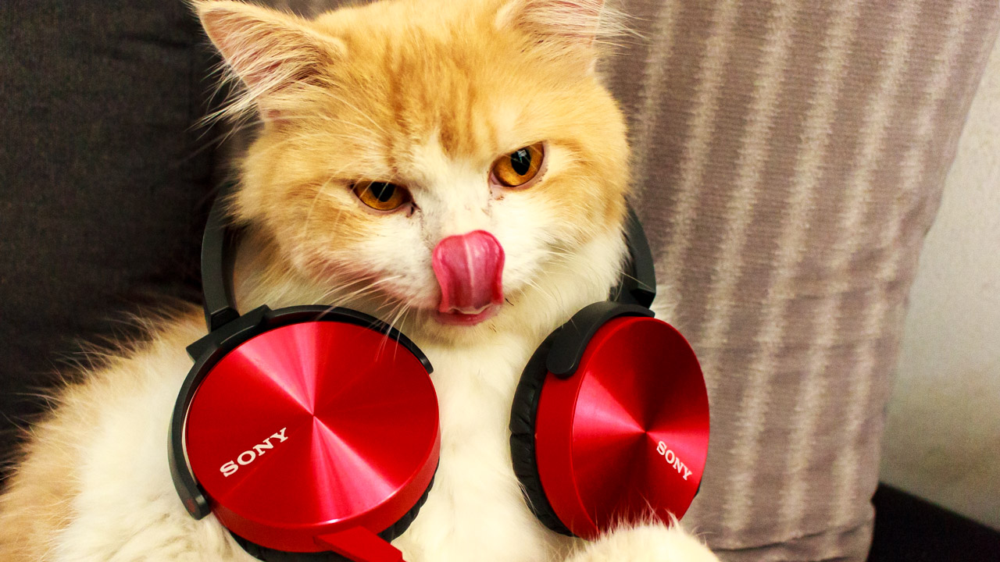
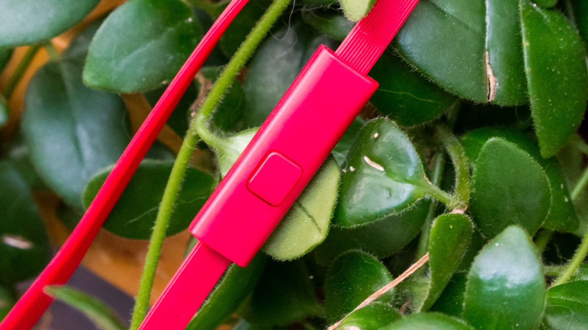
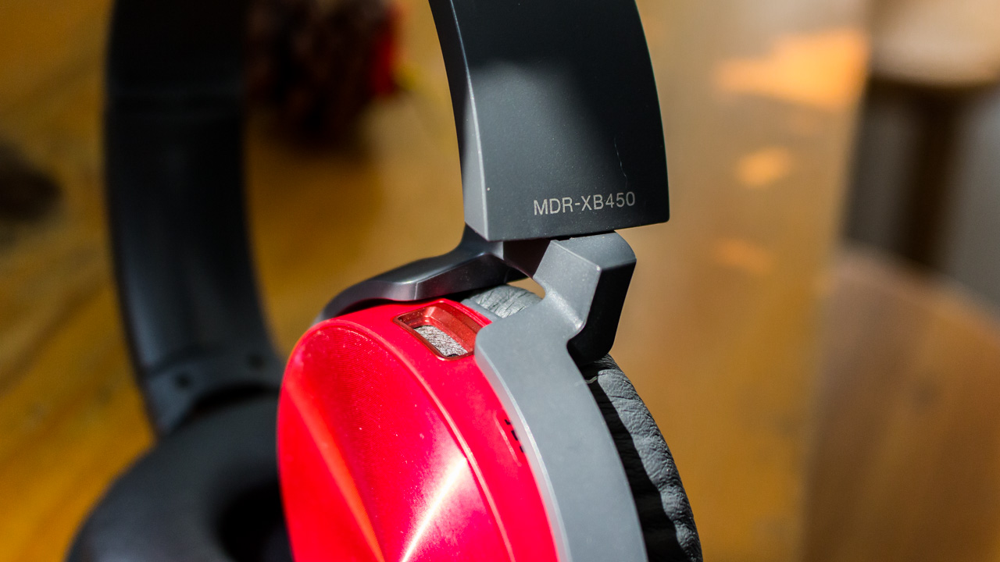
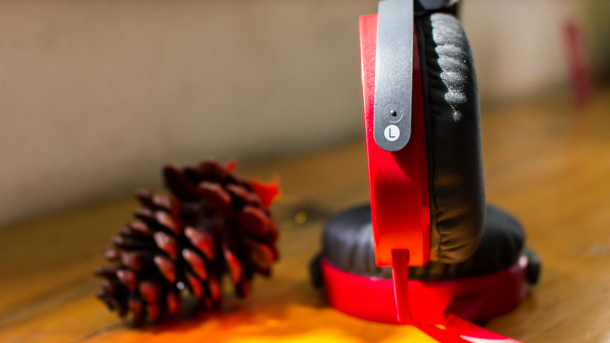

Tìm Kiếm
VuongDiQuyen.com
.jpg)
Giá : 1.000.000Đ
+áo sony
+tham quan nhà máy sản xuất a-si-ra-mo-to
+có cơ hội đi một chuyến du lịch ha_wai cùng gia đình
nhanh tay...!!!

MDR - XB450AP là mẫu tai nghe của Sony ra mắt vào 2014 nhưng đến nay vẫn còn nhận được sự quan tâm của người dùng nhờ thiết kế đẹp, giá thành vừa phải, cùng chất bass mạnh mẽ phù hợp với sở thích số đông người dùng. Dưới đây là một số hình ảnh trên tay chiếc XB450AP phiên bản màu đỏ đầy cá tính.
MDR - XB450 là mẫu tai nghe được nâng cấp từ chiếc XB400, thuộc dòng tai nghe Extra Bass của Sony. Ngay từ cái tên đã có thể thấy đây là dòng tai nghe nhấn về âm bass, khác với dòng Hi-Res nổi tiếng với chất âm trung thực. Theo mình thì nhiều bạn trẻ hiện nay sẽ thích một chiếc tai nghe thiên về bass nhiều hơn phù hợp với các bài nhạc sôi động.

Mẫu XB450 có khá nhiều màu sắc để lựa chọn, ngoài màu đỏ trong hình còn có màu đen, trắng, vàng và xanh dương cho các bạn thoải mái thể hiện cá tính. Khi mình xem qua 5 màu này thì màu đỏ và xanh dương gây ấn tượng với mình nhiều nhất, cho cảm giác trẻ trung, năng động rất phù hợp với một chiếc tai nghe Extra Bass.
Về thiết kế, XB450 là dòng tai nghe on-ear (đệm tai nghe nằm trên vành tai, còn in-ear là loại nằm trong tai, over-ear là chùm hết tai) với phần chụp tai được làm bằng nhôm vân xoáy rất đẹp mắt. Phần đệm được bọc một lớp giả da khá dày, khi đeo cho cảm giác êm tai và cách âm tương đối tốt nhưng tất nhiên không thể bằng in-ear hay over-ear. Khả năng cách âm là nhược điểm lớn nhất của dòng tai nghe on-ear.

Nếu đeo lâu, với thời tiết khá nóng bức như ở Tp.HCM nếu không quen thì đeo vài phút đã bắt đầu thấy nóng, ra mồ hôi và hơi khó chịu, tuy nhiên sau một tuần sử dụng mình đã quen và cảm thấy khá thoải mái.
Đặc biệt, chiếc tai nghe này còn được Sony trang bị thêm micro cùng một phím cứng dùng để trả lời cuộc gọi, tạm dừng bản nhạc hay chuyển qua bài mới bằng cách nhấp hai lần. Hiện chiếc tai nghe được bán trên trang chủ của Sony Việt Nam với giá niêm yết 1,49 triệu đồng và mình kiểu tra thì chỉ còn ba màu đen, đỏ và xanh dương.

còn gì bằng khi bạn được sở hữu món ăn vô cùng thoải mái này.hãy đến với Vương Dĩ Quyền bạn sẽ cảm nhận được tất cả các bậc thang cảm xúc của âm nhạc
Model: MDR-XB450AP
Nhà sản xuất Sony
Thời gian bảo hành: 6 tháng
Địa điểm bảo hành: Vương Dĩ Quyền
Liên Hệ
trụ sở chính: Redmond, Washington, Hoa Kỳ
phone: 123456789
Góp Ý
email:anhhungxadieu@gmail.com
Đối Tác
điện máy đỏ
thới giới vận động
viên thông B